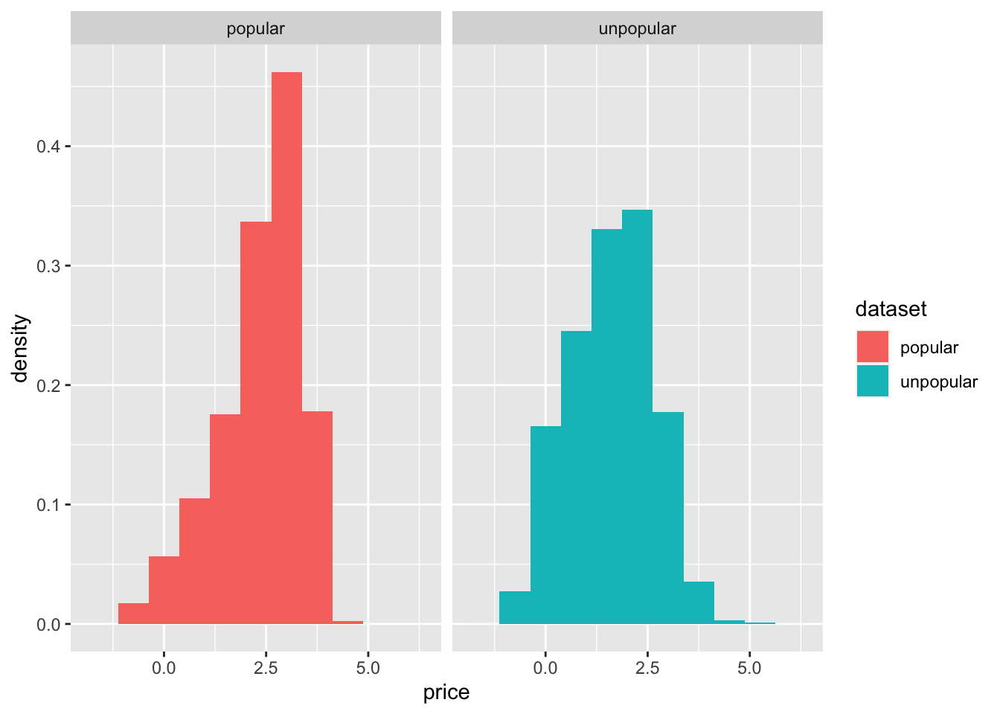
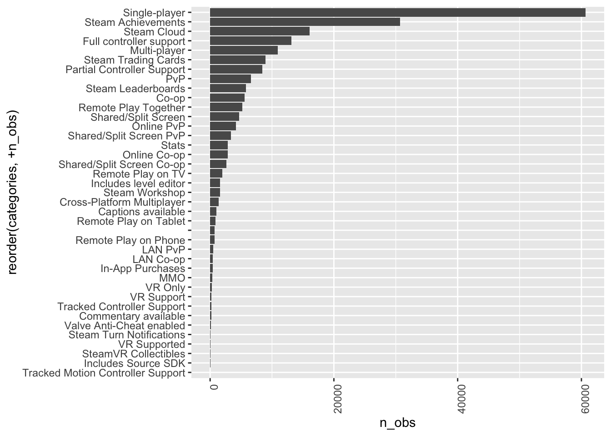
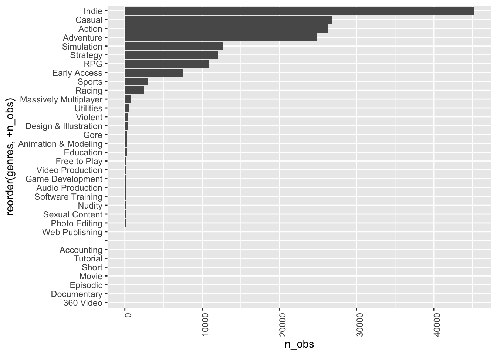
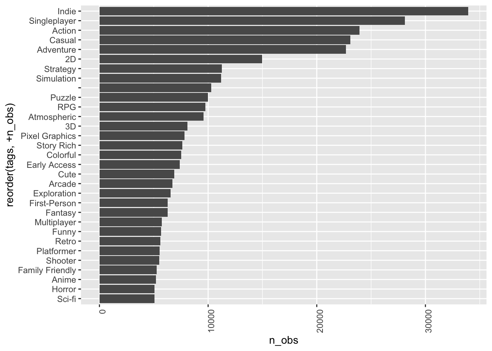
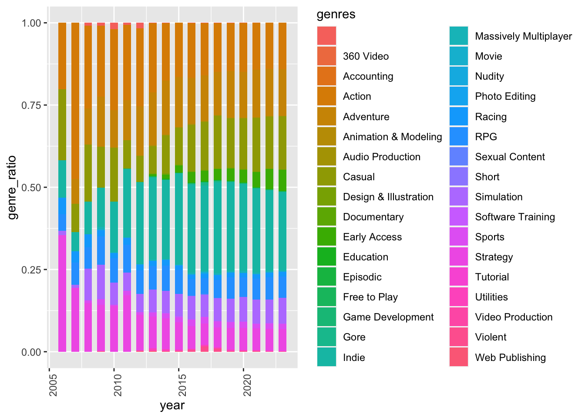

exploratory_analysis
df = read.csv("DATA/games.csv")|>
janitor::clean_names()|>
subset(select = -c(dlc_count, about_the_game, reviews, header_image, website, support_url, support_email, metacritic_score, metacritic_url, notes, developers, publishers, screenshots, movies, score_rank, average_playtime_two_weeks, median_playtime_two_weeks, average_playtime_forever, peak_ccu, full_audio_languages))|>
subset(price > 0)
#Change the format of release date.
df = df|>
mutate(release_date = as.Date(release_date, format = "%b %d, %Y"))definition of popular games
df_popular = df|>
subset((positive+negative) > 10)|>
subset(positive/(positive+negative) > 0.7)|>
subset(estimated_owners != "0 - 20000")|>
subset(estimated_owners != "0 - 0")|>
subset(median_playtime_forever > 120)
df_unpopular = anti_join(df, df_popular, by="app_id")We aim to analyze features that makes games popular, so it is important to make a definition of popular games, we will primarily adhere to the standard set by Steam[https://www.reddit.com/r/Steam/comments/ivz45n/what_does_the_steam_ratings_like_very_negative_or/] According to Steam’s rating system, we classify games as “popular” if they are mostly positive, positive, very positive, and overwhelmingly positive.
However, popularity means more than ratings; it also means a large player base. To account for this broader perspective of popularity, we included more criteria:
Estimated Owners: We only include games with estimated-owners more than 20000 people.
Median Playtime: Games selected for analysis will have a median playtime exceeding 120 minutes. (This is the latest time that allows users to get refunds)
By combining ratings, ownership, and playtime information, we could have a precise definition of “popular games” that fit our experience.
price distribution of popular and unpopular games
Price summary for popular games
summary(pull(df_popular, price))## Min. 1st Qu. Median Mean 3rd Qu. Max.
## 0.49 5.99 12.99 15.21 19.99 99.99Price summary for unpopular games
summary(pull(df_unpopular, price))## Min. 1st Qu. Median Mean 3rd Qu. Max.
## 0.29 2.59 4.99 8.14 9.99 999.00Based on tables, it is evident that popular games are more expensive than less popular games in every quantile. Such difference might caused by several reasons.
Mechanics: Popular games often have complex game mechanics that improve gaming experience. However, developing such mechanics requires time, which leads to higher production costs and reflect on the final price.
Animation Effects: The captivating animation effects is a important component for good games. The creation requires hiring skilled artists, which will lead to increasing production cost
Game Optimization: Popular games need to ensure smooth gameplay(although we have to admit some popular games still have tons of bugs). Optimization requires talented coder, which increase the production cost.
Then, we used statistical test to test whether there is difference in the two price distribution.
df_unpopular = df_unpopular|>subset(name != "Ascent Free-Roaming VR Experience")
combined_data = rbind(data.frame(dataset = "unpopular", price = log(df_unpopular$price)),
data.frame(dataset = "popular", price = log(df_popular$price)))
ggplot(data = combined_data, aes(x = price, fill = dataset)) +
geom_histogram(aes(y = ..density..), binwidth = 0.75)+
facet_grid(~dataset)## Warning: The dot-dot notation (`..density..`) was deprecated in ggplot2 3.4.0.
## ℹ Please use `after_stat(density)` instead.
## This warning is displayed once every 8 hours.
## Call `lifecycle::last_lifecycle_warnings()` to see where this warning
## was generated.
The two distribution looks approximately normal, so we decide to use T-test to test whether two groups’s log transformed price have similar distribution.
H0: they have same mean price H1: they have different mean price
result <- t.test(log(df_popular$price), log(df_unpopular$price))
result##
## Welch Two Sample t-test
##
## data: log(df_popular$price) and log(df_unpopular$price)
## t = 52.188, df = 6584.2, p-value < 2.2e-16
## alternative hypothesis: true difference in means is not equal to 0
## 95 percent confidence interval:
## 0.7043446 0.7593242
## sample estimates:
## mean of x mean of y
## 2.343884 1.612050The result shows a p-value smaller than 0.05, so we reject the null and conclude that the two groups have different mean price.
price distribution of games with different estimated owners
# we filter out Ascent Free-Roaming VR Experience since its price is 1000 dollars, which will make it hard to see any trend from our plot.
df|>
subset(name != "Ascent Free-Roaming VR Experience")|>
separate_wider_delim(cols = estimated_owners, delim = " - ", names = c("estimate_low", "estimate_high"))|>
mutate(estimate_low = as.numeric(estimate_low))|>
mutate(estimate_high = as.numeric(estimate_high))|>
mutate(estimate_mean = (estimate_high + estimate_low)/2)|>
mutate(estimate_mean = factor(estimate_mean))|>
ggplot(aes(x = estimate_mean, y = price))+
geom_boxplot()+
coord_flip()
From the price distribution plot we could observe a trend that games with more owners tend to be more expensive. However, we also noticed that a threshold exist: once a certain numbers of owners is reached, the prices of games begin to decline.
Overall frequency of keywords(genre, categories, tags)
Here, we try to explore the trend of keywords in genre, categories, tags.
categories_freq = df|>
separate_rows(categories, sep = ",")|>
group_by(categories)|>
summarise(n_obs = n())|>
arrange(desc(n_obs))|>
ggplot(aes(x = reorder(categories, +n_obs), y = n_obs))+
geom_bar(stat="identity")+
theme(axis.text.x = element_text(angle = 90, vjust = 1, hjust=1)) +
coord_flip()
categories_freq
From the bar plot, it is evident that single-player games have the highest frequency in our dataset, this is reasonable since multi-player games require higher optimization, and single player games are the best choice for independent game maker. The VR-related categories have low frequency in games, this is because the equipment is expensive and the technology is relatively new.
genre_freq = df|>
separate_rows(genres, sep = ",")|>
group_by(genres)|>
summarise(n_obs = n())|>
arrange(desc(n_obs))|>
ggplot(aes(x = reorder(genres, +n_obs), y = n_obs))+
geom_bar(stat="identity")+
theme(axis.text.x = element_text(angle = 90, vjust = 1, hjust=1)) +
coord_flip()
genre_freq
For the bar plot of genre, besides the most frequency keyword indie, other keywords are common when we talk about games. Sport, Racing, Action, Adventures includes most of the games genere.
tags_freq = df|>
separate_rows(tags, sep = ",")|>
group_by(tags)|>
summarise(n_obs = n())|>
subset(n_obs >= 5000)|>
arrange(desc(n_obs))|>
ggplot(aes(x = reorder(tags, +n_obs), y = n_obs))+
geom_bar(stat="identity")+
theme(axis.text.x = element_text(angle = 90, vjust = 1, hjust=1)) +
coord_flip()
tags_freq
As there are too many tags in steam, we only show most frequent tags, interestingly, we found there are more puzzle games compared to RPG, this might because the development cost of puzzle games are lower than RPG.
Trend of keywords frequency across different years
It might be informative to visualize the trend change of game genre developed in different years since WOW might be good game at 2000s, while games like Overwatch might be better game in 2020s.
genre_freq_year = df|>
mutate(year = year(release_date))|>
separate_rows(genres, sep = ",")|>
group_by(year, genres)|>
summarise(n_obs = n())|>
group_by(year)## `summarise()` has grouped output by 'year'. You can override using
## the `.groups` argument.genre_freq_year_total = df|>
mutate(year = year(release_date))|>
separate_rows(genres, sep = ",")|>
group_by(year)|>
summarise(n_obs_total = n())
genre_freq_year_total|>
knitr::kable()| year | n_obs_total |
|---|---|
| 1997 | 3 |
| 1998 | 1 |
| 1999 | 2 |
| 2000 | 2 |
| 2001 | 7 |
| 2002 | 2 |
| 2003 | 7 |
| 2004 | 7 |
| 2005 | 10 |
| 2006 | 79 |
| 2007 | 118 |
| 2008 | 230 |
| 2009 | 477 |
| 2010 | 419 |
| 2011 | 477 |
| 2012 | 659 |
| 2013 | 1011 |
| 2014 | 3312 |
| 2015 | 6109 |
| 2016 | 9853 |
| 2017 | 14823 |
| 2018 | 19051 |
| 2019 | 18579 |
| 2020 | 22777 |
| 2021 | 27694 |
| 2022 | 30735 |
| 2023 | 19446 |
| NA | 277 |
We could see from the table that there are very few games on steam before 2006, genre frequency might be strongly affected by randomness in those years, so we choose only to plot the trend after 2005.
#here we limit the year to later than 2002 since steam is lauched in 2002, we think the game before 2002 might be not representative.
left_join(genre_freq_year, genre_freq_year_total, by = "year")|>
subset(year > 2005)|>
mutate(genre_ratio = n_obs/n_obs_total)|>
ungroup()|>
plot_ly(x = ~year, y = ~genre_ratio, color = ~genres, type = "scatter", mode = "lines+markers", colors = "viridis")popular_genres_bar_plot = left_join(genre_freq_year, genre_freq_year_total, by = "year")|>
subset(year > 2005)|>
mutate(genre_ratio = n_obs/n_obs_total)|>
ggplot(aes(x = year, y = genre_ratio, fill = genres)) +
geom_col(position = 'stack', width = 0.6)+
theme(axis.text.x = element_text(angle = 90, vjust = 1, hjust=1))
popular_genres_bar_plot
We found some interesting trend from the line plot:
Rise of Indie Games: We notice that the genre “indie” has increased in recent years, particularly after the year 2012. This increase might caused by more accessible personal computers and no-code platforms like RPG-maker, which made it easier for independent game developers to create their games.
Shift in Genre Popularity: The line plot also shows a decreased frequency of Action games. Although we have to admit it is still one of the most frequent genres, it experienced a decline in recent years. This shift may be caused by changes in player preferences. Since most old games are action games, players might seek new genres when there are available ones. It suggests that players are increasingly seeking a wider variety of genres.
Casual Games on the Rise: We noticed there is an increase in the frequency of “Casual” games. This reveals that as the first generation that is familiar with computer gradually enter the job market, games that are relaxing are preferable for them.
Early Access Strategy: The “Early Access” games on Steam experienced a notable increase. This prosperous new business model in the game area shows the potential of games.
Word Cloud visualization
Wordcloud could help visualize the the frequency of keywords in different groups. Here, we separately create word cloud for popular and unpopular games.
overwhelm_popular_wordcloud = df|>
subset((positive+negative) > 500)|>
subset(positive/(positive+negative) > 0.95)|>
separate_rows(tags, sep = ",")|>
group_by(tags)|>
summarise(n_obs = n())|>
wordcloud2()
popular_tags_wordcloud = df_popular|>
separate_rows(tags, sep = ",")|>
group_by(tags)|>
summarise(n_obs = n())|>
wordcloud2()
unpopular_tags_wordcloud = df_unpopular|>
separate_rows(tags, sep = ",")|>
group_by(tags)|>
summarise(n_obs = n())|>
wordcloud2()overwhelm popular games’ wordcloud
overwhelm_popular_wordcloudpopular games’ wordcloud
popular_tags_wordcloudunpopular games’ wordcloud
unpopular_tags_wordcloudWe can observe differences among the three word-clouds plots:
The tag “difficult” appears more frequently in the word-cloud for popular and overwhelm popular games. This fit with with reality. Some of the best games in history, such as Elden Ring and Sekiro: Shadows Die Twice, are known for their challenging gameplay.
Another interesting difference is the ratio of 2D games to 3D games is higher in popular games. This is reasonable since small studios may struggle to allocate sufficient resources to create high-quality 3D modeling and they might choose to put the budget in mechanics. This contributes to the higher frequency of 2D games in the popular category.